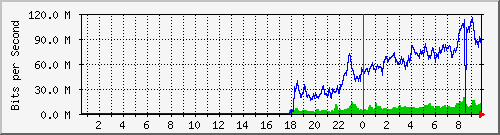
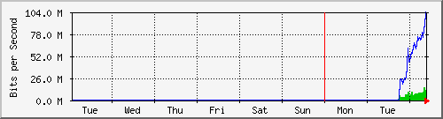
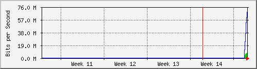

Dist_CCR1036 - if11
The statistics were last updated Wednesday, 8 April 2026 at 9:50,
at which time 'MikroTik-CCR1036' had been up for 58 days, 13:16:13.
`Daily' Graph (5 Minute Average)

|
Max |
Average |
Current |
| In: |
20.2 Mb/s (2.0%) |
7058.6 kb/s (0.7%) |
12.6 Mb/s (1.3%) |
| Out: |
114.6 Mb/s (11.5%) |
56.5 Mb/s (5.6%) |
82.5 Mb/s (8.2%) |
`Weekly' Graph (30 Minute Average)

|
Max |
Average |
Current |
| In: |
15.5 Mb/s (1.6%) |
6818.5 kb/s (0.7%) |
12.0 Mb/s (1.2%) |
| Out: |
104.0 Mb/s (10.4%) |
54.7 Mb/s (5.5%) |
94.8 Mb/s (9.5%) |
`Monthly' Graph (2 Hour Average)

|
Max |
Average |
Current |
| In: |
8011.0 kb/s (0.8%) |
5258.7 kb/s (0.5%) |
8011.0 kb/s (0.8%) |
| Out: |
72.7 Mb/s (7.3%) |
41.2 Mb/s (4.1%) |
72.7 Mb/s (7.3%) |
`Yearly' Graph (1 Day Average)

|
Max |
Average |
Current |
| In: |
0.0 b/s (0.0%) |
0.0 b/s (0.0%) |
0.0 b/s (0.0%) |
| Out: |
0.0 b/s (0.0%) |
0.0 b/s (0.0%) |
0.0 b/s (0.0%) |
| GREEN ### |
Incoming Traffic in Bits per Second |
| BLUE ### |
Outgoing Traffic in Bits per Second |